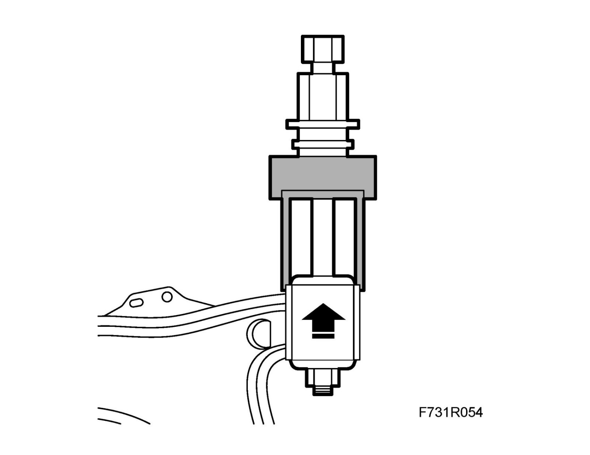
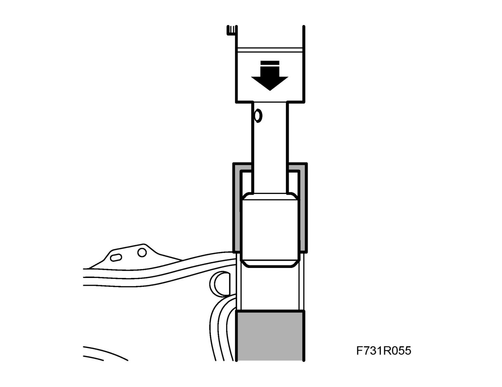

Suspension Arm Bush, Front
Suspension arm bush, frontTo remove
1. Remove the suspension arm.
2. Lubricate the bush with soapy water.
3. Press out the bush using KM-508-1 from Press tools 89 96 787 as well as the pull rod and KM-907-23 from 89 96 779 Press sleeve set, front chassis.

To fit
1. Lubricate the bush with soapy water.
2. Press the bush into the suspension arm using KM-907-13 from 89 96 779 Set of press sleeves, front assembly as well as KM-508-3 and KM-508-4 from 89 96 787 Set of press sleeves, front link arms in a hydraulic press.

3. Fit the suspension arm.